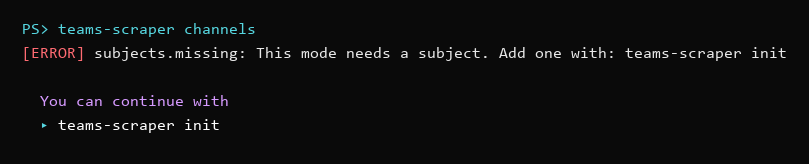

channels
Posts, shared files, channel names, and grades for the classes you checked. The alias is canales.
teams-scraper channels -s hist
teams-scraper channels -s hist -p posts,gradesWithout at least one class in the config, the code is subjects.missing. subjects[].name has to match Teams. If it is not in the list, the code is teams.class_missing.

Parts
If you omit -p, it reads posts and shared. You can ask for several, separated by commas.
| Part | What it stores |
|---|---|
posts | Channel posts. |
shared | Shared folders and files. Files go to descargas/ when downloads are on. |
channels | Channel names, including hidden ones the screen can show. |
assignments | Assignments seen from the class. |
grades | The grade text, in calificacion_texto. |
Part aliases: asignaciones and assigments are assignments. calificaciones is grades. canales is channels. An unknown part is config.invalid.
Repeat -s for more than one class. The shortcut or the name has to be in the config.